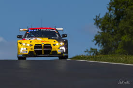

<div class="main-container">
  <div class="container">
    <div class="row">
      <div class="col-lg-6 col-12 left-col">
        <h1>Nurburgring</h1>
        <p>
          The Nürburgring, situated in Germany's Eifel region, is a renowned
          race track with a history dating back to the 1920s. Originally built
          to promote the German automotive industry and test new cars, the
          circuit's iconic "Nordschleife" featured a challenging 20-kilometer
          layout. Over the decades, it hosted Formula 1 races and other
          prestigious motorsport events. In 1976, a shorter and modern track,
          the "GP-Strecke," was added alongside the original Nordschleife.
          Today, the Nürburgring remains a symbol of motorsport, attracting car
          enthusiasts and hosting various racing events while preserving its
          historic legacy.
        </p>
        <div class="row">
          <div class="col-lg-4 col-12 car-images-container">
            
          </div>
          <div class="col-lg-4 col-12 car-images-container">
            
          </div>
          <div class="col-lg-4 col-12 car-images-container">
            
          </div>
        </div>
      </div>
      <div class="col-lg-6 col-12" id="track-layout-container">
        
      </div>
    </div>
  </div>
</div>
